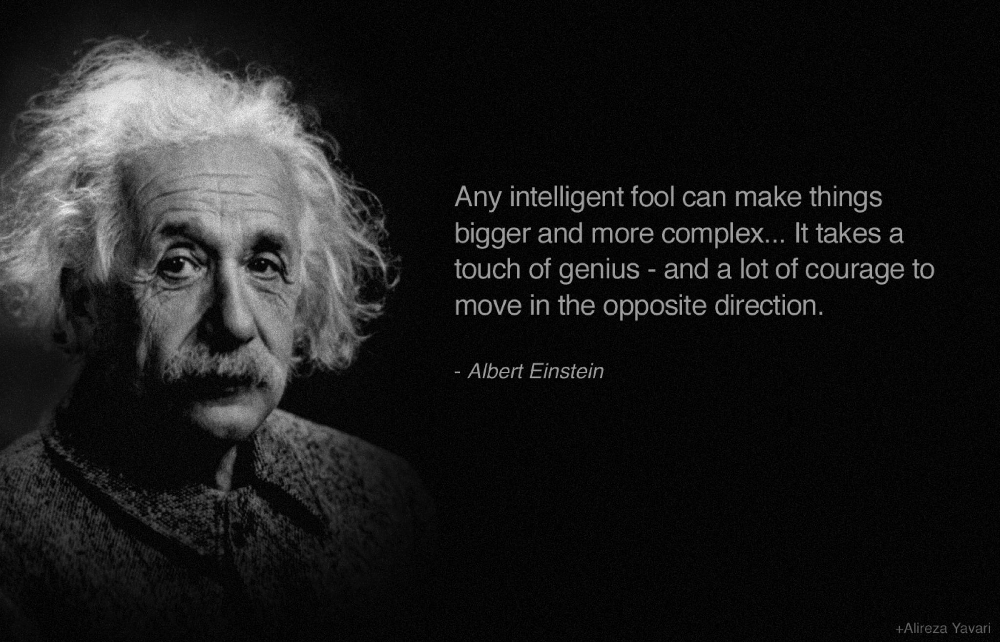

바보는 사물을 크고 복잡하게 만든다. 반대로 가려면 천재성과 용기가 필요하다. 아인슈타인의 말이다. 삶이란 정말 단순한 것이지만, 우리는 그것을 계속 복잡하게 만들고 있다. 단순하고 평범한 몇개의 원리만 알면 해당 분야의 80%는 소화할 수 있다. 논문이나 전문 분야에서도 그대로 적용된다.
- Everything should be made
as simple as possible, but no simpler모든 것은 더 단순하게 할 수 없을 만큼 가능한 한 단순하게해야한다. (아인슈타인)
- If you can’t explain it simply, you don't understand it well enough
단순하게 설명할 수 없다면 제대로 이해하지 하지 못한 것이다. (아인슈타인)
- Perfection is achieved, not when there is nothing more to add.
완벽은 덧붙일 것이 없을 때가 아니라 뺄 것이 없을 때 성취된다. (생텍쥐페리)
- Simplicity is the ultimate sophistication.
단순함은궁극의정교함이다 (애플 컴퓨터 슬로건)
- That’s been one of my mantras focus and simplicity. Simple can be harder than complex.
- 반복해서 외우는 주문중 하나는 집중과 단순함이다.
단순함은 복잡함보다 어렵다.(스티브 잡스)
- 반복해서 외우는 주문중 하나는 집중과 단순함이다.
- Art is the elimination of the unnecessary
예술은 불필요한 것을 제거하는 작업이다. (피카소)
- The essence of strategy is choosing what not to do.
- 전략의 본질은
무엇을 하지 않을지를 선택하는 것이다. (마이클 포터)
- 전략의 본질은
- You can always recognize truth by its beauty and simplicity.
진리는 언제나 아름다운과 단순함으로 인식할 수 있다.(리처드 파인만)
- Simplicity is prerequisite for reliability
- 단순성은 안정성을 위한 필수 조건
